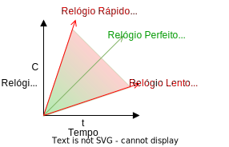
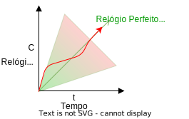
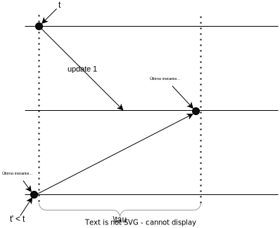

Tempo Físico
Para falarmos sobre sincronização de relógios em um cenário distribuído, primeiro devemos entender como funcionam os relógios em nível de uma única máquina, isto é, seus relógios físicos e como são usados pelo sistema operacional.
Relógios de Quartzo e Atômicos
Quando falamos em relógios, provavelmente falamos sobre relógios a base de quartzo. Para uma introdução rápida, assista ao seguinte vídeo.
Quartzo
- Efeito piezoelétrico
- 32768Hz
- Erro de 0,5s por dia
Em suma, um relógio de quartzo consiste em um diapazão de quartzo cortado a laser que, devido ao efeito Piezoelétrico2 e sua forma particular, vibra a \(32768 = 2^{15}\)Hz3, e em um contador que conta cada vibração, medindo a passagem do tempo. Estes relógios erram na medição do tempo em no máximo ½s por dia, desde que operem dentro da faixa de 5 a 35C, mas isso também muda com a idade do cristal, a corrente elétrica passando por ele e também devido a imperfeições no cristal1.
Computadores em geral usam relógios de quartzo, por serem baratos, como base de um relógio mantido em software. Isto é, do ponto de vista de um computador comum, o tempo é medido com base em um relógio quartzo, cujos incrementos são capturados em um contador; o contador gera interrupções em intervalos programados (e.g., Linux >2.6 usa 250Hz por padrão; máximo 1000Hz) e as interrupções causam ajustes em um relógio em software, um contador indireto \(C\).
Precisão
Dado a frequência padrão de 250Hz, medições de tempo menores que 4ms são altamente imprecisas. Como medir o tempo gasto em uma função do seu código?
Este relógio em software, \(C\), que usa um relógio de quartzo, impreciso, pode marcar a passagem do tempo com erro para mais ou para menos. Embora o erro exato do relógio seja desconhecido, o mesmo é limitado probabilisticamente. A taxa de erro é denominada drift, é representada por \(\rho\).
Assumindo um relógio perfeito, \(t\), temos que \(1 - \rho \leq \frac{dC}{dt} \leq 1 + \rho\). Assim, um \(\rho\) de 0.1 implica em um erro de mais ou menos 10%; a figura a seguir mostra a faixa em que \(C\) pode operar e que o erro em relação a \(t\) vai aumentando com a passagem do tempo.

Embora adequado para humanos, o erro dos relógios de quartzo é inaceitável em algumas operações computacionais. Felizmente, os erros do destes relógios podem ser minimizados ao ponto de termos um erros menores que 1s em milhões de anos, nos dispositivos conhecidos como relógios atômicos.
Embora muito bons, os relógios atômicos também não são perfeito e, devido a várias razões, podem levar também a erros. Mas o quê mais se pode fazer no sentido de melhorar a precisão dos relógios? A resposta está no UTC.
Tempo Universal Coordenado
O UTC, de uma mistura dos nomes em Inglês e Francês do Tempo Universal Coordenado, um padrão global para coordenação da medição da passagem do tempo. Segundo o UTC, o sol está a pino às 12:00 na latitude 0, ou a no máximo 1s deste instante; ao redor da latitude 0 grau estabelece-se uma faixa em que todos os pontos tem o mesmo horário, e outras 23 faixas como esta com deslocamentos consecutivos de +-1 hora. Estas faixas, conhecidas coloquialmente como fusos, sofrem ajustes por fatores políticos; a China, por exemplo, apesar de seu tamanho, está toda dentro de um mesmo horário, "correto" para Beijing.

O UTC é definido com base no TAI, Tempo Atômico Internacional, calculado como a média dos valores de relógios atômicos espalhados pelo globo. O TAI mede perfeitamente a passagem do tempo, mas como a rotação da terra é irregular, medir perfeitamente não é o adequado. Assim, o UTC leva em consideração o fato do dia não ter exatamente 24 horas e, de fato, não ter duração constante. Por exemplo, após um grande terremoto o centro de massa da terra pode ser alterado e a rotação ter sua velocidade aumentada ou diminuída.
UTC
Nearly all UTC days contain exactly 86,400 SI seconds with exactly 60 seconds in each minute. However, because the mean solar day is slightly longer than 86,400 SI seconds, occasionally the last minute of a UTC day is adjusted to have 61 seconds. The extra second is called a leap second. It accounts for the grand total of the extra length (about 2 milliseconds each) of all the mean solar days since the previous leap second. The last minute of a UTC day is permitted to contain 59 seconds to cover the remote possibility of the Earth rotating faster, but that has not yet been necessary.
Uma vez que tenhamos um tempo global, com o qual todos os relógios concordam, resolvemos os problemas apresentados acima, correto? Não exatamente, pois os relógios precisam ser sincronizados com o UTC e, como vimos, mesmo que sincronizados inicialmente, relógios podem se distanciar uns dos outros na marcação do tempo.
Sincronização de Relógios
Dado o UTC, temos então uma referência de tempo adequada para uso em sistemas computacionais, colocamos nova pergunta:
- Se o relógio se distância da medida correta da passagem do tempo, é possível corrigir este distanciamento, sincronizando-o com uma fonte correta, da qual UTC é nossa melhor aproximação, para que todos percebam a mesma passagem do tempo?
Embora a resposta seja negativa, no sentido de que não é possível alcançar sincronização perfeita, nada nos impede de fazer um melhor esforço e, neste sentido, também temos que nos perguntar qual a frequência de sincronização?
Frequência de Sincronização
Como garantir que um relógio com erro máximo igual a \(\rho\) não diferirá em mais que \(\delta\) unidades de tempo do UTC?
Vejamos um exemplo:
- \(\rho = 0,1\) (10%)
- \(\delta\) = 1s
- Após 10s, um nó com estas características se dessincronizaria em, no máximo, 1s em relação ao UTC.
- Logo, a sincronização deve ser feita a cada 10s, i.e, \(\frac{\delta}{\rho} = \frac{1s}{0,1} = \frac{1s}{0,1} = 10s\)
Mas, e se quisermos sincronizar dois relógios com UTC, um com erro \(\rho\), de forma que estes dois relógios não se distanciem mais que \(\delta\) unidades, o problema é mais difícil?
Se todos se sincronizarem com a mesma fonte, a cada \(\frac{\delta}{\rho}\) segundos, como ambos tem um erro máximo de \(\delta\) em relação à fonte, o erro máximo entre os dois nós é \(2\delta\). Como este erro é o dobro do desejado, basta dobrar a frequência de sincronização para cortar o erro pela metade. Vejamos novamente o exemplo
- \(\rho = 0,1\)
- \(\delta\) = 1s
- Após 10s, um nó com estas características se dessincronizaria em, no máximo, 1s em relação ao UTC.
- Como cada nó poderia estar errando em "direções" diferentes, após 5s, um nó poderia se adiantar em 0,5s enquanto o outro poderia se atrasar pela mesma quantidade de tempo, somando 1s de diferença. Logo, eles tem que se sincronizar a cada 5s, i.e, \(\frac{\delta}{2\rho} = \frac{1s}{2 \times 0,1} = \frac{1s}{0,2} = 5s\)
Finalmente, se considerarmos relógios com erros distintos, \(\rho, \rho'\), a sincronização deve ser feita pela média dos erros, isto é, \(\frac{\delta}{2\frac{\rho + \rho'}{2}} = \frac{\delta}{\rho + \rho'}\).
Agora que você já tem uma fonte confiável de tempo, o UTC, e sabe com que frequência sincronizar os relógios, só nos falta fazer a sincronização. Contudo, falta ainda definir o protocolo pelo qual a sincronização é feita e exatamente com quem, uma vez que simplesmente UTC é muito genérico. Comecemos com vetor "próximo" do UTC, os relógios atômicos em satélites GPS.
Global Positioning System
Receptores GPS, com seus relógios sincronizados com os dos satélites, que difundem regularmente sua posição e o instante em que a difusão é feita, determinam sua posição relativa aos satélites, em uma técnica conhecida como trilateração, que consiste em determinar a distância do receptor em termos dos eixos \(x\), \(y\) e \(z\) em relação a cada um dos satélites.
Em outras palavras, baseado na informação de um satélite, o receptor determina sua distância ao mesmo e, portanto, determina que está em uma esfera no entorno do satélite. Combinando a informação de 2 satélites, a posição do receptor é limitada a uma circunferência, isto é, a interseção de duas esferas. Com um terceiro satélite, a posição é reduzida a dois pontos, a interseção de uma esfera e uma circunferência, sendo um no espaço e que pode ser facilmente descartado.

Contudo, para que funcione, relógios dos satélites e receptores precisam estar sincronizados para que o cálculo da distância possa ser feito, mas sincronizar os relógios é exatamente o problema que estamos tentando resolver. Para contornar esta restrição, usa-se um quarto satélite, para determinar a distância no "eixo temporal".
Assim, temos uma receita simples para sincronização de relógios com UTC:
- Coloque um receptor GPS em cada nó do seu sistema
- Tenha erro de 0,1ns a 1ms do UTC
Apesar da queda dos preços dos receptores, colocar um GPS em cada dispositivo pode ser custoso demais. Em vez disso, podemos usar um recurso amplamente disponível, redes de computadores, e sincronizar com outra máquina, que fez o investimento necessário para manter o erro baixo. Para estes computadores "de segundo escalão", a receita então é:
- Pergunte que horas são.
- Use a resposta para ajustar o relógio local.
- Considere o erro introduzido pela latência variável da rede.
Sendo mais específico, nomeemos os processos como cliente, quem pergunta, e servidor, quem responde, e os instantes em que os eventos acontecem:
- Cliente pergunta "que horas são?" - \(t_0\)
- Servidor recebe pergunta - \(t_1\)
- Servidor anota o valor do relógio - \(t_s\)
- Servidor envia resposta - \(t_2\)
- Cliente recebe resposta - \(t_3\)

Esta receita básica pode ser ajustada de diversas formas, sendo a primeira dada pelo algoritmo de Cristian.
Algoritmo de Cristian
No algoritmo de Cristian, assumimos que o relógio do Cliente é bom o suficiente para medir a passagem de tempo em períodos curtos, mesmo que tenha uma drift rate considerável em períodos mais longos. Assim, podemos executar o algoritmo genérico, adicionando o seguinte:
- Assuma \(t_1 = t_s = t_2\)
- Assuma \(\frac{t_3-t_0}{2}\) como o tempo de transmissão da resposta (média da ida e da volta)
- Cliente ajusta relógio para \(C = t_s + \frac{t_3-t_0}{2}\)

Mas e a aproximação \(\frac{t_3-t_0}{2}\), é boa? É uma aproximação tão boa quanto possível, pois medir a latência em uma única direção demandaria relógios sincronizados, exatamente o que estamos tentando resolver com este algoritmo. Quero dizer, temos uma dependência circular aqui, como o vídeo a seguir mostra.
Bom, na verdade no nosso caso é um pouco mais fácil de dizer que as duas direções tem latências diferentes, pois sabemos que, em uma rede de larga escala, é possível e comum que pacotes tomem caminhos diferentes na ida e na volta. Neste, podemos estimar o erro que a aproximação introduz na sincronização, desde que tenhamos estimativas de tempo mínimo para a transmissão em cada sentido, \(T_{min}\). A figura a seguir demonstra o erro desta técnica4, onde
- \(t_3 - t_0\) corresponde ao tempo medido entre o envio da requisição e recepção da resposta
- as setas vermelhas indicam o caso em que a requisição foi muito mais rápida que resposta (\(T_{min}\))
- as setas verdes indicam o caso em que a resposta foi muito mais rápida que requisição (\(T_{min}\))

No caso vermelho, a aproximação \(\frac{t_3-t_0}{2}\) é muito menor que o tempo de propagação da resposta, \(t3 - t1\), e no caso verde a aproximação é maior que o tempo \(t_3 - t_2\). Em ambos os casos, o erro é está limitado a \(\frac{t_2 - t1}{2}\), ou seja, \(+- \frac{t_3 - t_0}{2} - T_{min}\).
Algoritmo de Berkeley
Enquanto o algoritmo de Cristian permite sincronizar um nó com uma fonte, outro algoritmo, de Berkeley, permite sincronizar múltiplos nós uns com os outros. Este algoritmo assume o que não há uma "fonte da verdade" do tempo, mas sim a necessidade de que todos os processos convirjam para um mesmo valor do relógio. É como nos filmes de espião em que os relógios são sincronizados; pouco importa se a bomba explodirá 10:57 ou 10:59, desde que todos concordem quando isso vai acontecer. Isso é o que chamamos de sincronização interna em vez de externa, como provido pelo algoritmo de Cristian.
O algoritmo de Berkeley requer que todo nó execute um processo de sincronização, um "daemon", e separa seus papéis em dois tipos, primário e secundário. O papel do primário pode ser rotacionado entre os vários processos, sem perdas para sua execução. O algoritmo então é executa como se segue:
- Primário pergunta "que horas são" para cada secundário (mensages 1,2,3 e 4)
- Secundário responde com valor atual do relógio (mensagens 5,6,7 e 8)
- Primário ajusta as respostas de acordo com o algoritmo de Cristian, para minimizar erros.
- Primário computa média dos valores recebidos, ignorando outliers (como o da mensagem 8).
- Primário envia ajustes para secundários (mensagens 8,9,10 e 11)
- Secundário executa ajuste sugerido pelo primário.
Embora interessantes, estes algoritmos não são normalmente usados, pelo menos não em sua forma "pura", em sistemas computacionais. Em vez deles, usamos o Network Time Protocol (NTP).
Network Time Protocol.
O NTP foi especificado originalmente na RFC 13056 e estendido pelas RFC 5905-59087 essencialmente para suportar IPv6 e reduzir o erro de sincronização para até 10\(\mu\)s.
Os diversos componentes do NTP são organizados em camadas, ou estrata, de forma que a informação do tempo flui da camada 0 (stratum 0) até a camada 15 (stratum 15). Os componentes não estão presos a camadas, que podem ser alteradas a medida que falhas acontecem e são dedicadas, e novos caminhos são encontrados usando-se o algoritmo de árvore geradora mínima Bellman-Ford, além de caminhos redundantes que conferem propriedades de tolerância a falhas à topologia.

Esta organização hierárquica leva a cada camada garantir um nível de sincronização diferente e permite escalar o uso do protocolo para níveis globais, usando a Internet como meio.
- Stratum 0: relógios atômicos/receptores GPS
- Stratum 1: ms to stratum 0
- Stratum 2: contata múltiplos stratum 1 e pares
- Strata 3...15
- Stratum 16: dessincronizado
Toda a comunicação entre nós pode ser autenticada, garantindo que a sincronização não seja facilmente manipulada e erros são minimizados pela coleta e uso de estatísticas de latência de comunicação, para evitar desvios quando fontes se tornam problemáticas.
NTP tem múltiplas formas de execução, adequadas para diferentes ambientes.
- Modo multicast: propaga tempo em rede local
- RPC: algoritmo de Cristian
- Simétrico: parecido com Berkeley
Na prática, boa parte dos dispositivos usa uma versão simplificada do NTP, o SNTP (Simple Network Time Protocol), adequada aos nós nas folhas da hierarquia. O SNTP é essencialmente o algoritmo de Cristian:
- \(\delta = (t_4-t_1)-(t_2-t_3)\)
- \(t = \frac{(t_2-t_1)+(t3-t_4)}{2}\)
- \(t_c = t_4+t\)
Por exemplo,
- \(t_1 = 1100, t_2 = 800, t_3=850, t_4=1200\)
- \(t = ((800-1100)+(850-1200))/2 = (-300 -350)/ = -325\)
- \(t_c = 1200-325 = 875\)
O Comitê Gestor da Internet, CGI, mantem uma excelente página sobre o NTP, com mais detalhes do que apresentado aqui, em NTP.br.
PTP - Precision Time Protocol
Mesmo com melhoria do protocolo e baratemento de dispositivos GPS, há ainda a necessidade de sincronização sub-microssegundo e barata. O Precision Time Protocol, PTP, especificação IEEE 15888 tenta cobrir este nicho.
Se escrutinarmos o PTP, veremos que o protocolo em si não difere muito do NTP. Contudo, o PTP usa interfaces de rede especilizadas para fazer o timestamping dos eventos do protocolo, conseguindo remover a latência nos dispositivos processando as mensagens e reduzindo o erro do protocolo até sub \(\mu\) (versus ordem de \(ms\) no NTP). Mais detalhes sobre o protocolo estão fora do escopo deste documento, mas podem ser facilmente encontrados nos links dados.
Nunca volte no tempo
Qualquer que seja o algoritmo utilizado, é provavelmente uma boa ideia nunca voltar no tempo. Mesmo que o universo não seja destruído no processo, voltar no tempo poderia levar a situações estranhas como um dado ter data de edição anterior a data de criação. Para evitar estas situações, devem ser feitos de ajustes graduais nos relógios, que acelerem ou desacelerem o relógio \(C\) em relação a \(t\) (ou sua melhor aproximação, pelo ajuste frequência de interrupção para atrasar/adiantar relógio ou ajustes dos incrementos com cada interrupção. Isso fará com que as curvas no seguinte gráfico convirjam. A exceção a esta regra deve ser restrita a correções após longos períodos em que o relógio dorme.

Usos de relógios sincronizados
Assumindo que tenhamos sincronizado os relógios de um sistema computacional, o que podemos fazer agora? Há uma série de problemas interessantes que podem ser resolvidos, como autenticação, terminação de transações, alocação de leases e diversos outros exemplos.9 Um exemplo interessante é a ordenação de eventos em um banco de dados. Para entender este problema, considere um cenário com um Sistema Bancário replicado, isto é, com várias cópias. No exemplo, sem perda de generalidade, nos focamos em duas cópias em lados opostos de uma rede de larga escala. Clientes disparam operações como saques, depósitos e transferências, por meio de mensagens para as duas cópias. Mensagens para a cópia próxima do cliente (em verde) são entregues rapidamente, enquanto mensagens para a cópia distante (em vermelho), demoram mais para ser entregues.

Imagine que o usuário U1 envie o comando C1 atualizar saldo da conta para USD 1010 e que o usuário U2 envie o comando C2 atualizar saldo da conta para USD 20.
Se os comandos chegam primeiro para a réplica mais próxima e são executados na ordem em que chegam, ao final da execução a réplica R1 terá executado C1 seguido de C2, tendo saldo da conta como USD 20, enquanto R2 terá executado C2 seguido de C1 e terá como saldo na conta USD 10.
O problema está na ordem de execução das operações.
Assuma que relógios estão perfeitamente sincronizados e que toda mensagem/update carrega consigo o timestamp de quando foi enviada. E se as réplicas processarem mensagens na ordem que foram enviadas, como identificado pelos seus timestamps?11 Assim, se C1 foi enviado antes de C2, C1 tem um timestamp menor que C2 e será executada primeiro em ambas as réplicas, o que resolve nosso problema, correto? Parcialmente, pois ainda temos o problema de identificar que nenhuma outra mensagem ainda por ser entregue foi enviada antes. Para isto, precisamos estender o modelo e assumir que o tempo de propagação máximo de uma mensagem, \(\tau\), é finito e conhecido. Assim, ao receber um comando com timestamp \(t\), uma réplica espera até \(t + \tau\) antes de executá-lo, pois qualquer comando com timestamp \(t' < t\) deve ter sido entregue até \(t+\tau\).

Implementar este protocolo é muito simples:
Ordenação de Mensagens por Timestamp
- Quando enviar uma mensagem, aumente-a com o valor atual do relógio.
- Quando receber uma mensagem, coloque-a em uma fila ordenada por timestamp.
- Quando o relógio marcar um tempo maior que \(t + \tau\), onde \(t\) é o timestamp da mensagem na cabeça da fila, retire a mensagem da cabeça da fila e execute o comando correspondente.
Embora correto, este protocolo, ou melhor, o modelo, não leva em consideração a dessincronização inerente dos relógios em um sistema distribuído. Como fazê-lo, supondo uma divergência máxima de \(\Delta\) entre quaisquer dois relógios, algo que pode ser arranjado, como visto antes, sincronizando-se os relógios a cada \(\frac{\Delta}{2\rho}\).
Se \(\Delta\) é a diferença máxima entre relógios, então se uma mensagem é enviada no instante \(t\), então até \(\Delta +t\), outro processo, atrasado em relação ao primeiro, poderá enviar uma mensagem com timestamp \(t' < t\). Tal mensagem pode demorar até \(\tau\) para ser entregue à réplica, ou seja, no instante \(t + \tau + \Delta\), do ponto de vista do primeiro cliente.
Se a réplica estiver sincronizada com cliente, então se esperar até \(t + \tau + \Delta\) para executar o comando, o fará de forma segura. Se estiver atrasada em relação ao primeiro cliente, então acabará por esperar além do necessário, mas sem violar a corretude do sistema.
Finalmente, se a réplica estiver adiantada em relação ao primeiro cliente, então seu relógio alcançará \(t + \tau + \Delta\) antes do relógio do primeiro cliente, mas isso não é um problema. Isto porquê, o último instante em que o cliente 2 poderá enviar uma mensagem com timestamp \(t' < t\) é o instante em que o relógio da réplica marcar \(t + \Delta\), e portanto deverá também ser recebido até que o mesmo relógio marque \(t + \tau + \Delta\).

O mesmo raciocínio pode ser usado para definir um protocolo de acesso recursos para os quais leases são distribuídos, onde um lease é uma permissão de acesso durante uma janela de tempo, emitida por um coordenador (possivelmente eleito usando os algoritmos vistos anteriormente), e \(\Delta\) é o máximo de dessincronismo entre os relógios. O seguinte protocolo resolve este problema:
Alocação de Lease
Ao receber um lease para a janela de tempo \(t_1\) a \(t_2\)
- espera até \(t_1 + \Delta\)
- usa o recurso até \(t_2\).
Se relógio estiver adiantado em relação ao cliente anterior, vai achar que é \(t_1+\Delta\) enquanto o anterior acha que é \(t_1\); exclusão mútua garantida. Se relógio estiver atrasado em relação ao cliente anterior, vai achar que é \(t_1 - \Delta\), e continua esperando, enquanto ele acha que já é \(t_1\) e para de usar; exclusão mútua garantida. Recurso fica ocioso por \(\Delta\), em média, a cada lease.
Devido ao alto custo de se manter o recurso não utilizado, \(\Delta\) deve ser feito tão pequeno quanto possível, como feito, por exemplo, o Google True Time que consegue manter a diferença em sub-milisegundos usando relógios atômicos dentro de seus datacenters e um API para geração de timestamps.
Nas soluções anteriores, um nó precisa esperar por muito tempo antes de usar um recurso. E se ele aprendesse antes que os outros nós não farão requisições, que não haverão sobreposições de requisições? E se houvesse um relógio que avançasse não com o tempo, mas com eventos interessantes do sistema? Esta é a ideia dos relógios lógicos.
-
Distorção mecânica gera corrente elétrica e submissão a uma corrente elétrica gera uma distorção mecânica. ↩
-
32768 é a primeira potência de 2 maior que 20000, a maior frequência sonora audível aos seres humanos. ↩
-
Fonte: Benjamin D. Esham, (bdesham) - Based upon Ntp.png by Kim Meyrick ↩
-
RFC 5905-5908,2010 ↩
-
IEEE 1588TM Standard for A Precision Clock Synchronization Protocol for Networked Measurement and Control Systems. ↩
-
Liskov, B.: Distrib Comput (1993) 6: 211. doi:10.1007/BF02242709 ↩
-
Unidade Simples de Dinheiros. ↩
-
Empates são quebrados pelo identificador do processo, isto é, se duas mensagens são produzidas ao mesmo tempo por U1 e U2, então o a mensagem de U1 tem precedência na execução. ↩